CLAUDE’S PICK
Apache Airflow — LLM과 에이전트를 DAG에 직접 통합하는 Common AI Provider 출시


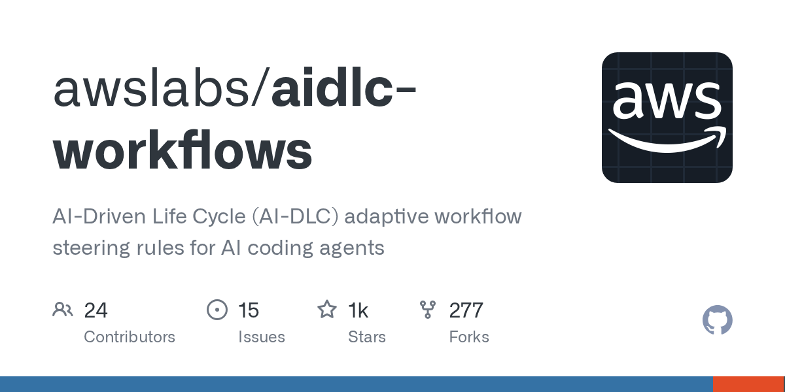
데이터 파이프라인과 AI 에이전트를 별도 도구로 관리할 때 운영 복잡도가 증가하는 문제를 해결하기 위해 Apache Airflow가 Common AI Provider 패키지를 출시했다. 6가지 AI TaskFlow 데코레이터, 350+ Hook 기반 HookToolset, Human-in-the-Loop 승인 플로우, durable=True를 통한 자동 재시작, 토큰 사용량 및 대화 히스토리 메타DB 적재 등을 지원하여 단일 오케스트레이터에서 파이프라인과 AI 에이전트를 통합 운영할 수 있게 한다.
핵심 포인트: 핵심 기여: 기존 DAG에 LLM과 에이전트를 직접 통합하고, 350+ Hook을 에이전트 도구로 활용하며, 실패 시 자동 복구 및 모든 AI 작업 메트릭을 메타DB에 기록하여 데이터 파이프라인과 AI 워크플로우의 완전한 통합 운영 환경 제공.
🔗 github.com/awslabs/aidlc-workflows
블로그 (Blog)
DeepSeek-V4: 100만 토큰 지원하는 오픈소스 초대형 모델 공개
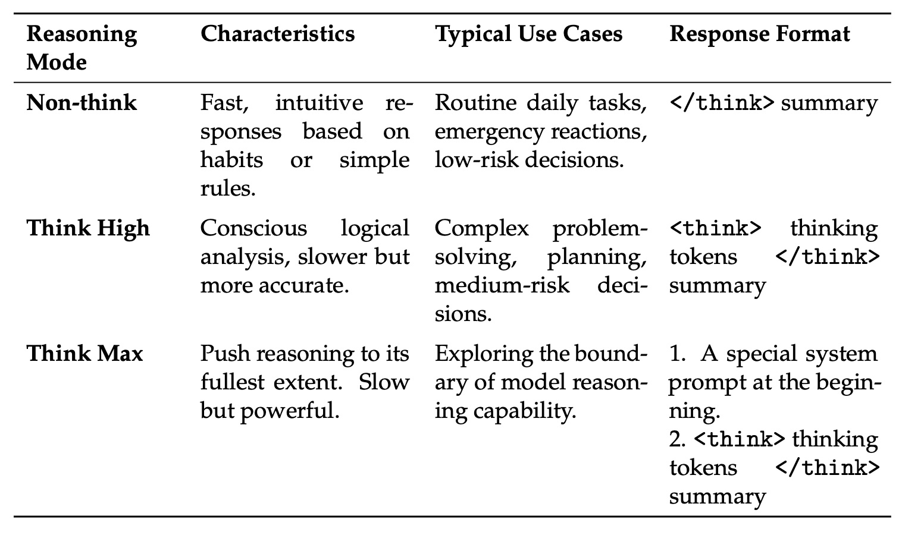
대규모 언어모델의 추론 효율성 저하 문제를 해결하기 위해 딥시크가 100만 토큰 컨텍스트를 지원하는 DeepSeek-V4 시리즈를 오픈소스로 공개했다. 하이브리드 어텐션 구조(CSA+HCA)와 mHC 기술을 통해 V3.2 대비 연산량 27%, 메모리 10% 수준으로 감소시키면서도 MMLU-Pro 87.5점, LiveCodeBench 93.5점으로 GPT-5.4, Claude Opus 4.6 등 상용 최강 모델과 동등 이상의 성능을 달성했다.
핵심 포인트: 핵심 성과: DeepSeek-V4-Pro는 1.6조 파라미터 MoE 모델로 100만 토큰 지원하며, 하이브리드 어텐션으로 추론 FLOPs 27% 감소 및 KV 캐시 90% 절감. MMLU-Pro 87.5, LiveCodeBench 93.5, SWE Verified 80.6%의 벤치마크에서 상용 폐쇄형 모델들을 능가.
🔗 huggingface.co/deepseek-ai/DeepSeek-V4-Pr…
기타 (Others)
Langfuse — LLM 앱 디버깅을 위한 프롬프트·비용 추적 플랫폼
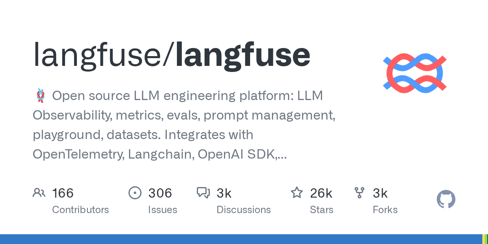
LLM 애플리케이션 개발 시 console.log로 로그를 뒤지며 디버깅하는 비효율성이 문제다. Langfuse는 프롬프트 입력부터 LLM 출력, API 비용까지 전 과정을 통합 추적하는 관찰성 플랫폼으로, 개발자가 AI 모델의 오류 원인을 빠르게 파악하고 성능을 최적화할 수 있도록 지원한다.
핵심 포인트: 핵심 기여: Langfuse 아키텍처를 통해 프롬프트부터 비용까지 LLM 애플리케이션의 전체 라이프사이클을 한 곳에서 관리하여 개발자의 디버깅 시간을 대폭 단축할 수 있다.
🔗 opsoai.com/posts/Stop-Debugging-LLMs-with…
기타 (Others)
AI & RESEARCH
TexOCR-Bench: 과학 PDF를 컴파일 가능한 LaTeX로 변환하는 OCR 벤치마크

기존 문서 OCR 기술은 일반 텍스트나 마크다운만 지원하며 과학 출판에 필수적인 LaTeX의 구조적 특성을 손실한다. TexOCR-Bench는 이러한 문제를 해결하기 위해 과학적 PDF를 페이지 수준에서 직접 컴파일 가능한 LaTeX 형식으로 재구성하는 방법론과 벤치마크를 제시한다. 이를 통해 과학 논문의 복잡한 수식, 표, 그림 등을 정확하게 보존하면서 디지털 처리 가능한 형태로 변환할 수 있다.
핵심 포인트: 핵심 기여: LaTeX 형식의 구조적 정확성을 유지하면서 과학 PDF를 자동 변환하는 최초의 체계적 벤치마크 제시. 페이지 수준 컴파일 가능성 검증을 통해 기존 마크다운 기반 OCR 대비 과학 문서 변환의 실용성 향상.
논문 (Papers)
RAG: 복잡한 컨텍스트 처리를 위한 검색 증강 생성의 한계와 개선 방향
LLM이 추론 시 외부 지식을 통합하기 위해 널리 사용되는 RAG 기술이 직면한 문제를 다룬다. 검색된 컨텍스트가 복잡하거나 불완전하거나 이질적인 경우 단일 생성 프로세스로는 증거를 효과적으로 조정하지 못한다는 한계를 지적한다. 이는 RAG 시스템의 신뢰성과 정확성을 향상시키기 위한 개선된 접근 방식의 필요성을 강조한다.
핵심 포인트: 핵심 기여: 복잡하고 불완전한 검색 컨텍스트에서 LLM의 증거 조정 능력의 한계를 명확히 하고, 단일 생성 프로세스 기반 RAG의 구조적 문제점을 식별했다.
논문 (Papers)
RAG: 적응형 검색 메커니즘으로 LLM 기반 생성 효율성 향상
대규모 언어 모델이 외부 지식에 접근할 때 검색 효율성 문제가 발생하는 상황에서, 적응형 검색 메커니즘이 기본 패러다임으로 등장했다. 기존 방식은 검색 후 실패 시 단순히 재시도 신호만 처리했으나, 개선된 접근 방식은 동적 검색 전략으로 검색 품질과 효율을 동시에 향상시켜 RAG 시스템의 신뢰성을 높인다.
핵심 포인트: 핵심 기여: 적응형 검색 메커니즘을 통해 기존 RAG 시스템의 검색 실패 처리 방식을 개선하고, 검색 효율성을 향상시키는 새로운 패러다임 제시.
논문 (Papers)
Embedding Compatibility Adapters — 임베딩 모델 교체 비용 0원으로 만드는 직교 변환
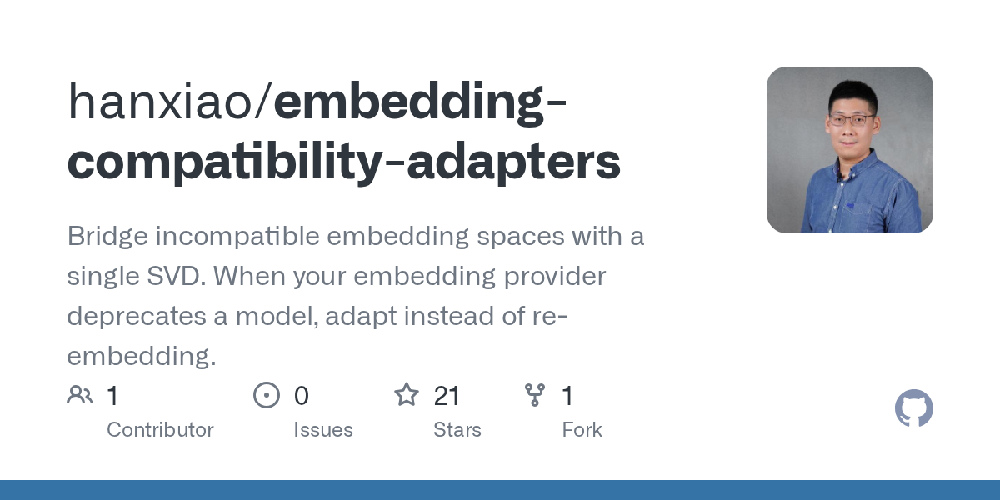
임베딩 모델을 교체할 때마다 수백만 원의 재처리 비용이 발생하는 문제를 해결하는 수학적 접근법. 같은 데이터로 학습한 임베딩 모델들의 벡터 공간은 내부 아키텍처가 다르더라도 단순히 회전된 형태만 다르다는 점에 착안하여, Procrustes alignment를 통한 직교 변환으로 기존 모델의 벡터를 새 모델의 공간으로 즉시 맵핑한다. SVD 연산 한 번만으로 수억 개 문서의 재임베딩 없이 임베딩 서비스 종료 상황에 대응 가능하다.
핵심 포인트: 핵심 성과: SVD 단일 연산으로 임베딩 공간 간 호환성 확보, 768차원에서 1024차원으로의 즉시 벡터 맵핑 실현으로 재처리 비용을 완전히 제거.
🔗 github.com/hanxiao/embedding-compatibilit…
GitHub
Abstract-CoT — AI가 인간 언어 없이 추상 기호로 독립적 사고
기존 LLM은 복잡한 문제 해결 시 자연어 기반 추론 과정을 생성하면서 토큰 사용량과 지연 시간이 증가하는 문제가 있다. Abstract-CoT는 인간 언어와 무관한 64개의 추상 기호만을 활용하여 추론 과정을 처리하는 기법을 제시한다. 워밍업 단계의 병목 SFT와 자가 증류, 그리고 강화학습 GRPO를 통해 기호에 논리적 의미를 부여하며, 수학 문제에서 추론 토큰 사용량을 11.6배 감소시키면서도 정답률은 유지한다.
핵심 포인트: 핵심 성과: 자연어 추론 없이 추상 토큰 기반 처리로 추론 토큰 사용량 11.6배 감소, 정답률 유지. 2단계 학습(워밍업 SFT + 강화학습 GRPO)으로 의미 있는 추상 기호 체계 구축 가능.
논문 (Papers)
Nemotron 3 Nano Omni: 엔비디아의 멀티모달 통합 경량 모델
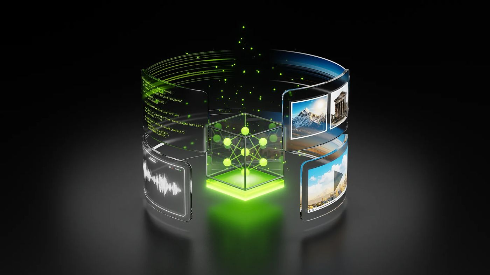
기존의 비전, 음성, 이미지, 텍스트 모델이 파편화되어 있는 문제를 해결하기 위해 엔비디아가 단일 통합 모델 Nemotron 3 Nano Omni를 공개했다. 30B 파라미터 중 3B만 활성화하는 하이브리드 MoE 구조를 채택하여 연산 효율과 처리 속도를 극대화했으며, 비디오 추론 환경에서는 다른 오픈 모델 대비 시스템 처리 용량을 최대 9.2배 향상시켰다. 모든 모델과 레시피를 오픈소스로 공개했다.
핵심 포인트: 핵심 성과: 비디오 추론 환경에서 시스템 처리 용량 9.2배 향상, 30B 파라미터 중 3B만 활성화하는 효율적 MoE 구조로 연산 성능과 속도 극대화, 멀티모달 기능을 단일 모델에 통합.
🔗 developer.nvidia.com/blog/nvidia-nemotron…
기타 (Others)
CoSearch: 강화학습 기반 에이전트 검색의 추론과 문서 순위 공동 훈련

에이전트 기반 검색 시스템에서 추론 과정과 문서 순위 지정을 동시에 최적화하기 어려운 문제를 해결하는 연구. CoSearch는 강화학습을 통해 검색 에이전트가 질문에 답하기 위해 필요한 문서를 효과적으로 찾고 순위를 매기는 능력을 함께 학습하도록 훈련한다. 이를 통해 복잡한 검색 작업에서 더 정확하고 효율적인 결과 도출을 실현한다.
핵심 포인트: 핵심 기여: 강화학습 기반 프레임워크로 문서 검색 에이전트의 추론 능력과 순위 지정 능력을 통합 최적화하여 기존 방식 대비 검색 정확도 및 효율성 향상을 달성.
기타 (Others)
Multi-modal RAG: PDF, 테이블, 이미지를 지능형 시스템으로 변환
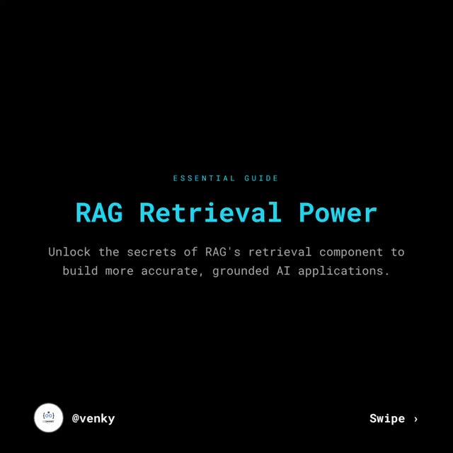
기존 RAG 시스템이 텍스트 기반 검색에만 제한되는 문제를 해결하기 위해 다중 모드 RAG 시스템을 설계한다. PDF, 테이블, 이미지 등 다양한 데이터 형식을 통합적으로 처리하여 검색 정확도를 높인다. Agentic RAG 접근 방식으로 자율적 계획 수립, 도구 기반 정보 수집, 피드백 기반 적응이 가능해지며, 임베딩과 고급 검색 전략을 통해 복잡한 쿼리에 대한 신뢰할 수 있는 답변을 생성한다.
핵심 포인트: 핵심 기여: 다중 모드 입력(PDF, 테이블, 이미지)을 단일 임베딩 공간으로 통합하고, Agentic RAG의 자율적 추론 능력으로 멀티 스텝 작업 처리 가능성을 제시한다.
🔗 threads.com/@data_scientist001/post/DXlkU…
기타 (Others)
ChatGPT 프롬프트: 6천장 경험자가 알려주는 목적 기반 작성법
ChatGPT 이미지 생성에서 기존의 마스터피스, 울트라디테일 같은 키워드 강화 방식이 더 이상 필요하지 않다는 것이 문제다. OpenAI 공식문서에 따르면 최신 언어 모델의 성능 향상으로 프롬프트를 재작성하는 내부 리라이팅 프로세스가 작동하기 때문이다. 목적/용도, 핵심 브리프, 필수 요소, 맥락/환경, 구도/공간 관계, 빛/색/재질, 제약/금지, 출력/포맷 순서의 목적 기반 프롬프팅 구조를 따르면 더 효율적인 이미지 생성이 가능하다.
핵심 포인트: 핵심 기여: 6천 개 프롬프트 생성 경험으로 검증한 8단계 구조화 작성법으로, 불필요한 수식어를 제거하면서도 구체적 맥락과 기술적 요소(ISO, 렌즈, 색온도 등)를 통해 더 나은 결과물을 생성할 수 있음을 실험으로 입증했다.
기타 (Others)
MinerU2.5-Pro: PDF-to-Markdown 문서 파싱 모델 95.69 SOTA 달성
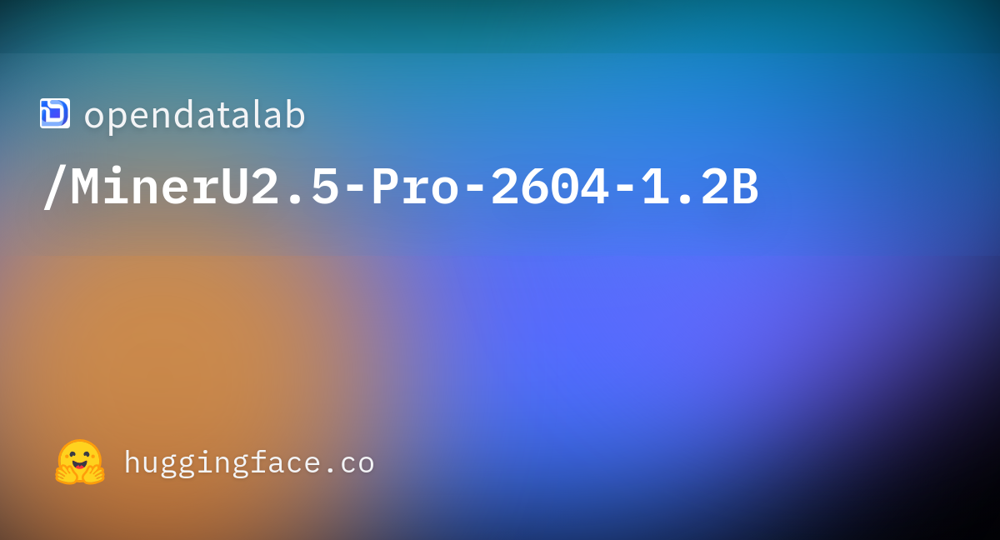
PDF 문서를 마크다운으로 변환하는 과정에서 구문 분석의 정확도가 떨어지는 문제를 해결하기 위해 개발된 모델. 원본 1.2B 매개변수 아키텍처를 유지하면서 데이터 엔지니어링에만 집중하여 전반적인 성능을 향상시켰다. 새로운 벤치마크인 OmniDocBench v1.6에서 95.69의 절대 SOTA 점수를 달성하며 문서 파싱 분야의 최고 성능을 입증했다.
핵심 포인트: 핵심 성과: OmniDocBench v1.6에서 95.69의 절대 SOTA 점수 달성, 아키텍처 변경 없이 데이터 엔지니어링만으로 뛰어난 성능 제공.
🔗 huggingface.co/opendatalab/MinerU2.5-Pro…
기타 (Others)
RARE: 법률·금융 분야 RAG 성능 평가 프레임워크
법률, 금융 등 높은 문서 유사도를 가진 분야에서 RAG 시스템의 성능을 정확히 평가하기 어려운 문제를 해결하는 프레임워크. RARE는 중복성을 고려한 검색 평가 메커니즘을 제시하여 유사한 문서들이 많은 도메인에서 정보 검색 증강 생성의 실제 성능을 신뢰성 있게 측정할 수 있게 한다.
핵심 포인트: 핵심 기여: 높은 문서 유사도 환경에서 RAG 성능을 정확히 평가하는 중복성 인식 평가 프레임워크 제시로, 법률·금융 분야의 도메인 특화 검색 시스템 개선을 가능하게 함.
논문 (Papers)
Claude Managed Agents — 세션 간 기억 유지하는 Memory 베타 공개
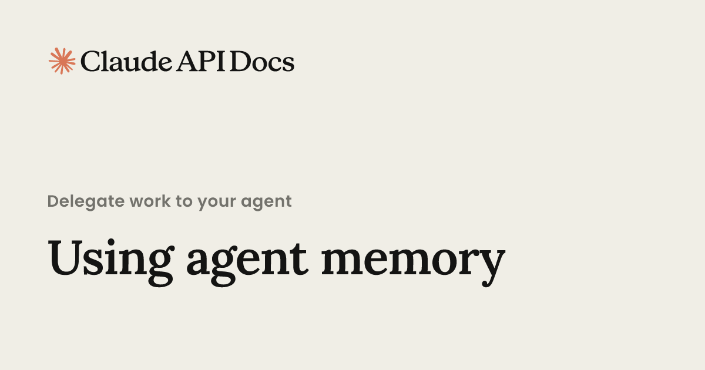
Claude Managed Agents에 대화 이력과 작업 방식을 기억하는 Memory 기능이 추가됨으로써 에이전트의 연속성 문제를 해결한다. 텍스트 파일 형태로 저장된 메모리는 개발자가 직접 수정 및 버전 관리할 수 있으며, 여러 에이전트가 공유 메모리로 팀 규정을 일관되게 적용할 수 있다. Notion, Asana 등 주요 기업들이 몇 주 내에 프로덕션 에이전트를 배포하면서 복잡한 인프라 작업 시간을 획기적으로 단축했다.
핵심 포인트: 핵심 성과: 에이전트가 세션을 넘어 이전 대화와 작업 선호도를 자동으로 기억하며, 여러 에이전트가 팀 규정을 공유하여 일관된 행동 보장. 기존 수개월 인프라 작업을 며칠~몇 주로 단축하며 Notion, Asana, Rakuten, Sentry 등이 실제 배포 성공 사례 기록
🔗 platform.claude.com/docs/en/managed-agent…
기타 (Others)
DEVTOOLS & OPEN SOURCE
getdesign.md — AI 에이전트에 브랜드 디자인 언어를 한 줄로 주입
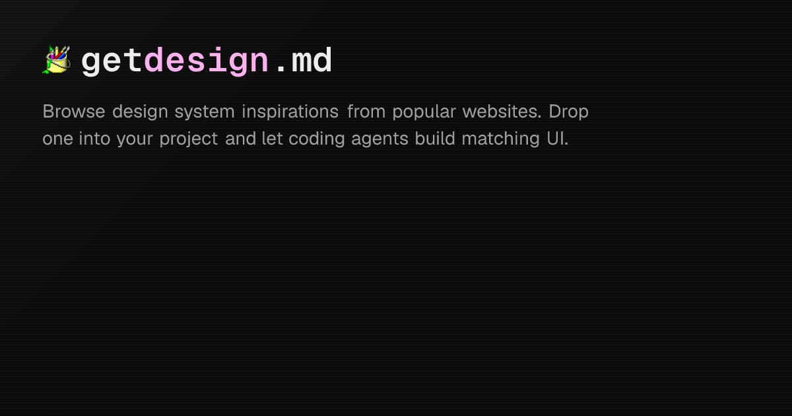
AI 코딩 에이전트가 디자인 스타일 지정 시 여백 철학, 타이포그래피 위계, 이미지 비율 같은 실제 디자인 언어를 제대로 이해하지 못하는 문제를 해결한다. getdesign.md는 터미널 한 줄 명령으로 Apple, BMW, Starbucks, Stripe, Notion, Tesla 등 60개 이상의 유명 브랜드 디자인 시스템을 DESIGN.md 파일로 생성한다. 생성된 파일은 컬러, 타이포, 컴포넌트 규칙을 자연어로 정제한 형태로 Claude, Cursor, Copilot 같은 AI 에이전트가 즉시 이해하고 실행할 수 있는 의미 단위로 구성된다.
핵심 포인트: 핵심 성과: GitHub 66.9k 스타를 획득한 도구로, 공식 디자인 가이드라인보다 가볍고 에이전트 친화적인 형태로 브랜드 디자인을 재현하여 같은 컴포넌트도 브랜드별로 완전히 다른 결과물을 생성할 수 있다.
기타 (Others)
Matt Pocock의 Claude Skills — 절차 있는 엔지니어링 워크플로우 공개
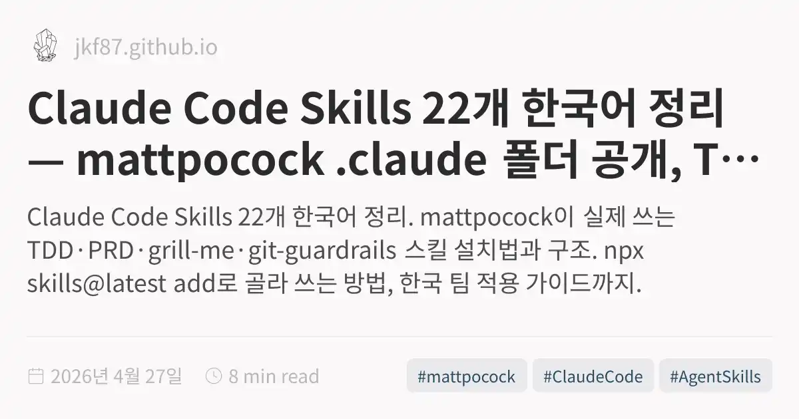
LLM 시대에 프롬프트를 무분별하게 던지는 방식의 한계를 지적하며, TypeScript 전문가 Matt Pocock이 자신의 Claude 워크플로우 22개를 공개했다. Planning, Development, Tooling, Writing 4개 카테고리로 체계화된 스킬들은 TDD, PRD 작성, 아키텍처 설계 등 실무 엔지니어링 절차를 구조화한다. 특히 ‘grill-me’ 스킬은 LLM에게 본인의 계획을 엄격히 검증받도록 설계되어, 코딩 에이전트 시대에 개인의 워크플로우 자체가 곧 브랜드 자산임을 시사한다.
핵심 포인트: 핵심 성과: GitHub 트렌딩 1위로 24시간 내 5,551개 별 획득, 누적 27,702개 도달. 핵심 기여: 워크플로우 스킬화를 통해 어떤 모델을 쓸지보다 어떤 절차로 호출할지가 더 중요한 시대적 패러다임 전환을 제시.
🔗 jkf87.github.io/mattpocock-skills-real-en…
기타 (Others)
agentic-stack — AI 코딩 에이전트의 포터블 메모리 시스템
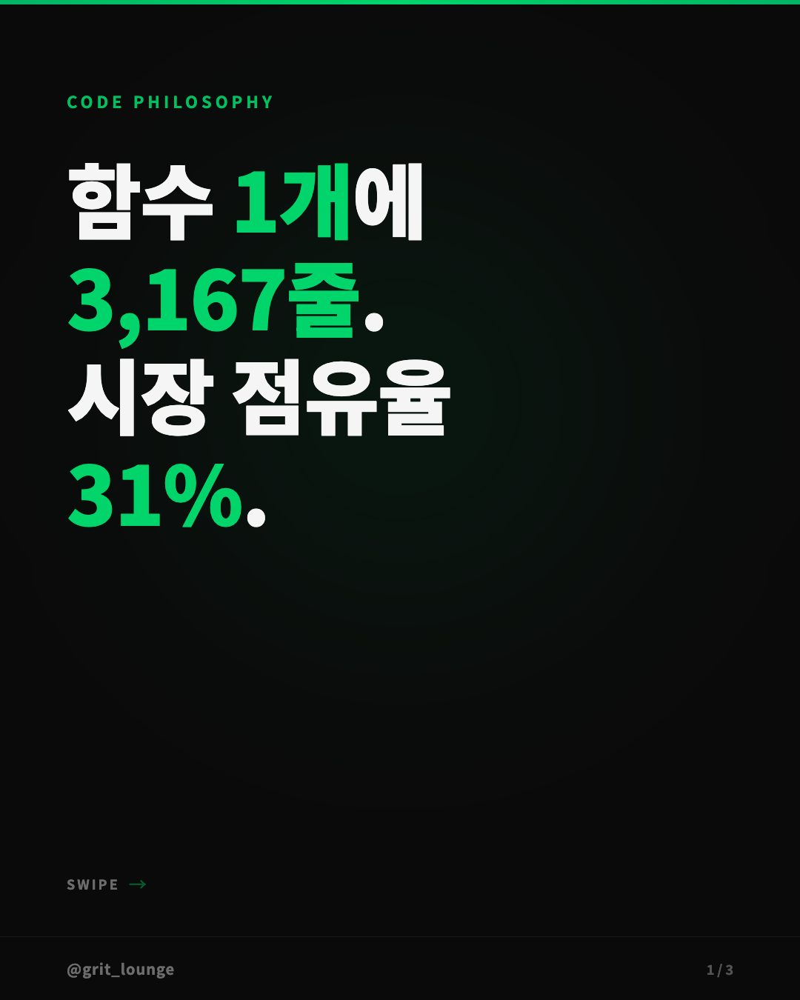
AI 코딩 에이전트가 개발 툴을 전환할 때마다 학습 컨텍스트를 잃는 문제를 해결하는 오픈소스 프로젝트. Cursor, Windsurf, Claude Code 등 다양한 툴 간 이동 시에도 메모리와 스킬을 유지한다. 에이전트가 학습한 패턴을 매일 정리해 사용자의 검토와 승인을 거쳐 장기 기억으로 저장하는 방식으로 인간의 통제 하에 AI 학습을 관리하며, 스킬이 2주간 3회 실패 시 자동으로 코드를 수정해 자가 개선하는 기능을 기본 탑재했다.
핵심 포인트: 핵심 기여: 포터블 에이전트 폴더로 여러 IDE 간 메모리 무결성 유지, 사용자 승인 기반 장기 기억 관리로 AI 드리프트 방지, 자동 코드 수정 메커니즘으로 스킬 신뢰도 향상
🔗 github.com/codejunkie99/agentic-stack
GitHub
RAG-Anything — 표·수식·차트까지 이해하는 멀티모달 RAG 프레임워크
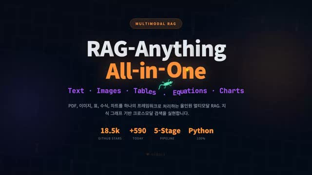
기존 RAG 시스템은 PDF, 이미지, 표 등 비텍스트 콘텐츠를 제대로 처리하지 못하는 한계가 있다. 홍콩대 HKUDS가 개발한 RAG-Anything은 MinerU 기반 고정밀 파싱으로 PDF, Office, 이미지를 일괄 처리하고, 멀티모달 지식 그래프를 구축하여 텍스트-이미지-표 간의 관계를 자동으로 매핑한다. 벡터 임베딩과 그래프 구조를 융합한 하이브리드 검색과 VLM을 통한 이미지 기반 질의응답까지 지원하는 올인원 멀티모달 RAG 솔루션이다.
핵심 포인트: 핵심 성과: 5단계 파이프라인으로 PDF, PPT, Excel, 이미지 전부 네이티브 처리 가능하며, GitHub에서 하루 786스타 기록 및 18.5K 스타 달성. pip install raganything으로 한 줄 설치 완료하며 도큐먼트 기반 AI 시스템 구축을 위한 완전한 프레임워크 제공.
🔗 github.com/HKUDS/RAG-Anything
GitHub
Tolaria — Obsidian 대항마, Swift 오픈소스 마크다운 지식베이스 앱
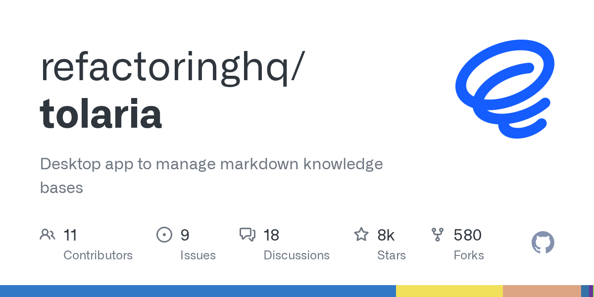
개인 지식 관리에 Obsidian 같은 독점 솔루션에 의존하는 문제를 해결하기 위해 Swift로 개발된 완전 오픈소스 macOS 앱 Tolaria가 공개됐다. 위키링크, 그래프 뷰, 전문 검색 기능을 지원하면서 클라우드 없이 로컬 마크다운 파일만 사용하며, MIT 라이선스로 배포되어 사용자가 데이터 소유권을 완전히 보유할 수 있다.
핵심 포인트: 핵심 기여: 완전 오픈소스(MIT 라이선스) macOS 마크다운 지식베이스 관리 앱으로 위키링크, 그래프 뷰, 검색 등 Obsidian 수준의 기능을 로컬 파일 기반으로 제공하여 클라우드 종속성 제거
🔗 github.com/refactoringhq/tolaria
기타 (Others)
Claude Code Hook — 업무 기록 자동화 시스템
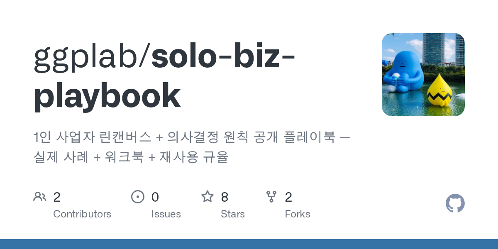
개발자가 Claude Code 세션을 여러 개 진행하면서 일일 업무 내역을 추적하기 어려운 문제를 해결하는 자동화 시스템이다. Claude Code 종료 시 hook을 통해 Gemini 2.5 Flash로 업무를 요약하고 Google Calendar API로 자동 저장하여, session id로 일일 업무를 검색하고 주간 업무 기록을 자동으로 생성할 수 있게 한다.
핵심 포인트: 핵심 기여: Claude Code 세션 종료 후 자동 요약 및 캘린더 등록으로 업무 추적 효율성 증대, 서버 배포를 통해 컴퓨터 없이도 자동 실행 가능한 확장성 제공
🔗 github.com/ggplab/solo-biz-playbook/tree…
GitHub
Stitch — 마크다운 기반 자동 디자인 시스템 생성
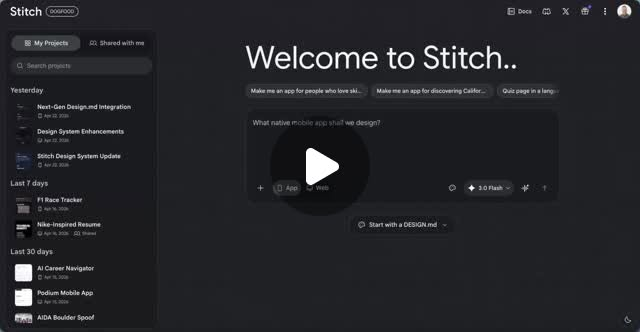
디자이너와 개발자 간 디자인 시스템 동기화의 어려움을 해결하기 위해 구글이 공개한 Stitch의 DESIGN.md 업그레이드 버전. DESIGN.md 파일만 업로드하면 캔버스 위에 디자인 시스템이 자동 생성되며, 파일이 없는 경우 기존 코드베이스나 웹사이트에서 디자인 규칙을 자동 추출한다. 디자인 토큰 연동 기능으로 세밀한 제어가 가능해졌으며, 디자인 에이전트가 명확한 규칙과 시스템 위에서 인터페이스를 일관되게 생성할 수 있다.
핵심 포인트: 핵심 성과: DESIGN.md 파일 자동 인식으로 즉시 디자인 시스템 캔버스 생성, 기존 코드베이스 자동 분석으로 디자인 규칙 추출, 디자인 토큰 연동으로 AI 에이전트 기반 인터페이스 자동 생성 지원.
🔗 threads.com/@choi.openai/post/DXg7VXyE-US…
기타 (Others)
ENGINEERING
NVIDIA Dynamo — AI 에이전트 추론 최적화로 API 비용 절감
AI 에이전트가 코딩 작업을 수행할 때 불필요한 API 호출과 재계산으로 인한 비용과 시간이 낭비되는 문제를 해결하기 위해 엔비디아가 개발한 솔루션. NVIDIA Dynamo는 에이전트 맞춤형 스택 최적화를 통해 불필요한 재계산을 제거하고 추론 처리량을 7배 향상시킨다. 다가오는 에이전트 시대에서 모델 성능의 실질적 경쟁력은 이러한 인프라 최적화에 있다.
핵심 포인트: 핵심 성과: NVIDIA Dynamo를 통해 에이전트 추론 처리량을 7배 향상시키고 불필요한 API 비용과 재계산 시간을 대폭 감소시켰다.
기타 (Others)
PRODUCT & INDUSTRY
Claude — Blender 연동으로 AI가 직접 3D 작업 명령 수행
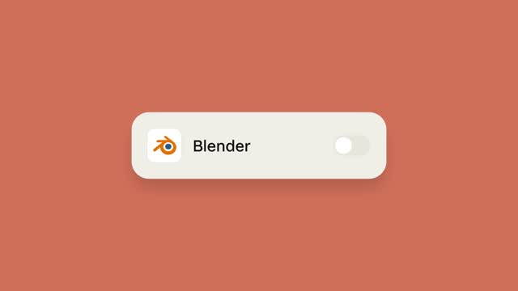
크리에이터들이 3D 작업 시 Blender와 다른 디자인 도구를 사용할 때 수작업으로 많은 반복 작업을 수행해야 하는 문제가 있다. Anthropic의 Claude는 이제 Blender 연동 기능을 제공하여 사용자가 Claude 앱에서 Blender 스위치를 활성화하면 AI가 실시간으로 Blender 화면을 인식하고 직접 명령을 실행할 수 있게 되었다. 이를 통해 3D 모델링, 렌더링 등의 작업 효율을 대폭 향상시킬 수 있다.
핵심 포인트: 핵심 기여: Claude가 Blender 화면을 인식하고 직접 제어 명령을 실행할 수 있는 네이티브 통합 기능 제공으로 3D 크리에이티브 작업의 자동화 실현.
🔗 anthropic.com/news/claude-for-creative-wo…
기타 (Others)
Manyfast — AI가 만드는 소프트웨어 기획 문서 자동화 도구
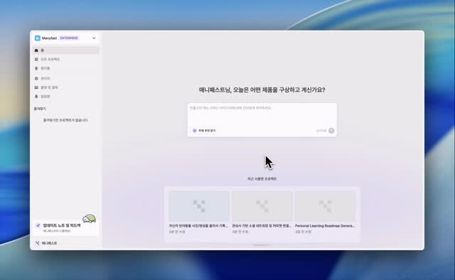
소프트웨어 기획자와 PM들이 PRD, 기능명세서, 유저플로우, 와이어프레임 작성에 소비하는 시간이 문제다. Manyfast는 AI 에이전트를 통해 이러한 기획 문서 전체를 자동으로 생성하여 통상 3일이 소요되는 기획 과정을 3시간 이내에 완료할 수 있게 한다. 현재 누구나 무료로 이용 가능하며 월 1,000명 이상의 활성 사용자를 확보하고 있다.
핵심 포인트: 핵심 성과: 기획 문서 작성 시간을 3일에서 3시간으로 단축하며, 현재 WAU 1,000+ 규모로 성장 중이고 상반기 주요 업데이트를 예정하고 있다.
기타 (Others)
GPT Image-2와 Canva Magic Layer: 이미지 분리 도구 비교
사용자가 GPT Image-2로 생성한 이미지를 Canva의 Magic Layer 기능으로 분리하는 방식을 시도했다. 현재 해상도 품질 저하 문제가 있지만, 이 문제가 개선되면 실무에서 충분히 활용 가능한 수준의 이미지 분리 워크플로우가 될 수 있다는 평가다.
핵심 포인트: 핵심 관찰: GPT Image-2 생성 이미지와 Canva Magic Layer를 조합한 이미지 분리 방식이 해상도 개선 시 실용적인 도구가 될 수 있는 잠재력을 보임.
🔗 threads.com/@wooyeon.design/post/DXgDbrdE…
기타 (Others)
Launchr.Studio — AI 에이전트 앱 출시 예정
AI 에이전트 애플리케이션 개발 및 배포를 위한 플랫폼인 Launchr.Studio가 출시를 앞두고 있다. 사용자가 원하는 기능을 명확하게 설명하면 에이전트 앱을 생성할 수 있으며, 출시 후 다양한 활용 사례를 지원할 계획이다. 개발자와 기업이 복잡한 AI 에이전트 구축 과정을 단순화할 수 있는 솔루션을 제공한다.
핵심 포인트: 핵심 기여: 자연어 기반 에이전트 앱 생성으로 AI 에이전트 개발의 진입장벽을 낮추고, 출시 예정인 플랫폼을 통해 엔터프라이즈급 에이전트 배포 환경을 제공한다.
기타 (Others)
Flipbook — AI가 실시간으로 화면을 그려내는 웹의 미래
기존 웹 페이지가 HTML, CSS, 버튼 같은 사전 정의된 구조를 불러오는 방식이라면, Flipbook은 사용자의 입력에 따라 AI 이미지 모델이 화면 전체를 픽셀 단위로 실시간 생성한다. 사용자가 화면의 어느 부분을 클릭하든 AI가 클릭 의도를 해석해 다음 화면을 동적으로 렌더링하며, 버튼 같은 인터랙티브 요소가 별도로 코딩될 필요가 없다. 공개 17시간 만에 93만 조회수를 기록해 AI 업계의 주목을 받았다.
핵심 포인트: 핵심 성과: 전통적 웹 개발 패러다임을 AI 이미지 생성으로 대체하며, 사용자가 의도한 모든 영역을 클릭 가능한 인터페이스로 변환, 공개 후 17시간 만에 93만 조회수 달성.
기타 (Others)
Claude Code — 멀티 에이전트 자동 코드 리뷰 ‘/ultrareview’ 기능 출시
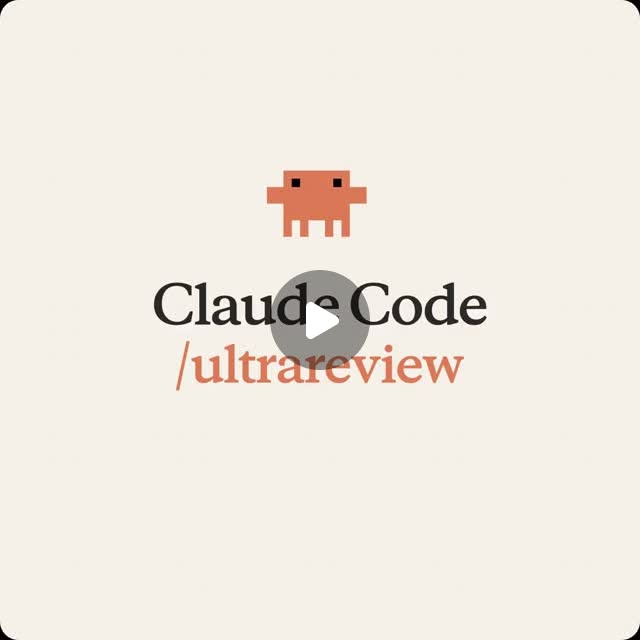
프로덕션 환경에 병합되는 인증 로직이나 데이터 마이그레이션 같은 치명적 코드의 위험성을 줄이기 위해 앤트로픽이 Claude Code에 ‘/ultrareview’ 기능을 추가했다. 클라우드에서 다수의 버그 탐지 에이전트를 동시에 실행하여 코드를 자동으로 검토하고, 분석 결과를 CLI와 데스크톱 화면으로 즉시 전달한다. 5월 5일까지 Pro 및 Max 구독자에게 3회 무료로 제공되며, 인간 코드 리뷰 프로세스의 클라우드 기반 멀티 에이전트 자동화로의 진화를 시사한다.
핵심 포인트: 핵심 기여: 앤트로픽이 직접 구축한 멀티 에이전트 검수 시스템으로 치명적 코드의 병합 전 자동 검수 프로세스를 실현하며, 인간 코드 리뷰를 클라우드 기반 에이전트 자동화 영역으로 전환하는 산업 전환점을 제시한다.
🔗 threads.com/@choi.openai/post/DXcve0aE6GN…
기타 (Others)